2024 National 5 Mathematics - Paper 1 questions
Source: Scottish Qualifications Authority (SQA) / Qualifications Scotland. This is a StemInteract HTML companion, not an official HTML edition. Selectable text is supplied alongside original page images. Use the images or original PDF for equations, powers, fractions, vector notation, tables and diagrams; text extraction cannot fully preserve mathematical layout.
Jump to a question
PDF page 1
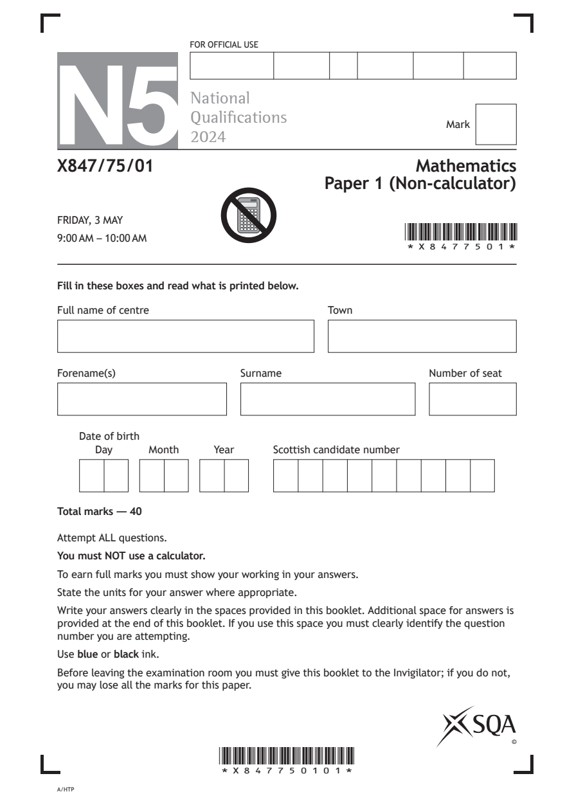
Selectable page text
FOR OFFICIAL USE
N5
National
Qualications
Mark
2024
X847/75/01 Mathematics
Paper 1 (Non-calculator)
FRIDAY, 3 MAY
9:00 AM – 10:00 AM
*X8477501*
Fill in these boxes and read what is printed below.
Full name of centre Town
Forename(s) Surname Number of seat
Date of birth
Day Month Year Scottish candidate number
Total marks — 40
Attempt ALL questions.
You must NOT use a calculator.
To earn full marks you must show your working in your answers.
State the units for your answer where appropriate.
Write your answers clearly in the spaces provided in this booklet. Additional space for answers is
provided at the end of this booklet. If you use this space you must clearly identify the question
number you are attempting.
Use blue or black ink.
Before leaving the examination room you must give this booklet to the Invigilator; if you do not,
you may lose all the marks for this paper.
©
*X847750101*
A/HTPPDF page 2
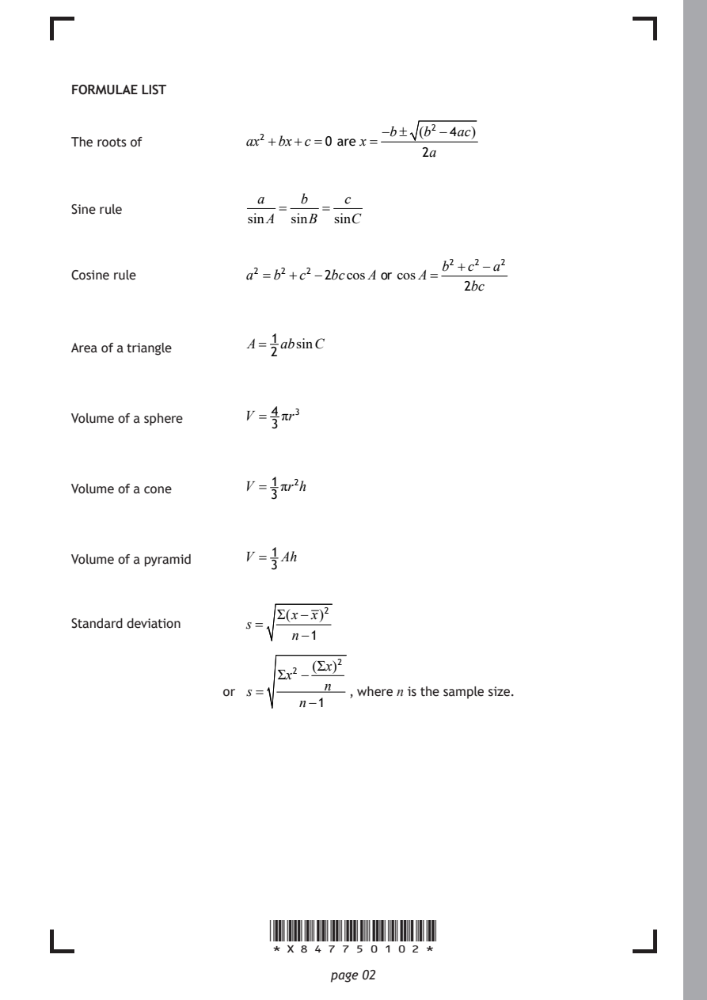
Selectable page text
FORMULAE LIST
−b± (b² −4ac)
The roots of ax² +bx+c=0 are x=
2a
a b c
Sine rule = =
sinA sinB sinC
b² +c²−a²
Cosine rule a² =b²+c² −2bccosA or cosA=
2bc
1
A= absinC
Area of a triangle
2
4
Volume of a sphere V = πr³
3
1
Volume of a cone V = πr²h
3
1
Volume of a pyramid V = Ah
3
Σ(x−x)²
Standard deviation s =
n−1
(Σx)²
Σx² −
n
or s = , where n is the sample size.
n−1
*X847750102*
page 02PDF page 3
Paper 1, Question 1Paper 1, Question 2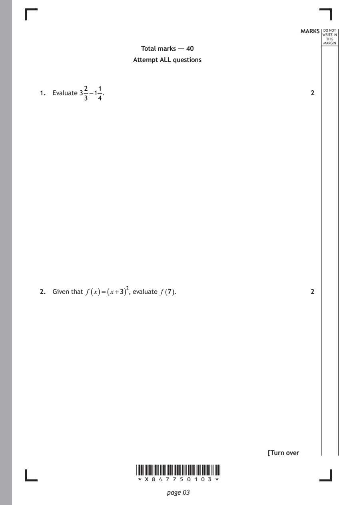
Selectable page text
MARKS _{W}^{D}_{R}^{O}_{I} _{T}^{N}OT
E IN
THIS
MARGIN
Total marks — 40
Attempt ALL questions
2 1
1. Evaluate 3 −1 . 2
3 4
2. Given that f (x)=(x+3)², evaluate f (7). 2
[Turn over
*X847750103*
page 03PDF page 4
Paper 1, Question 3Paper 1, Question 4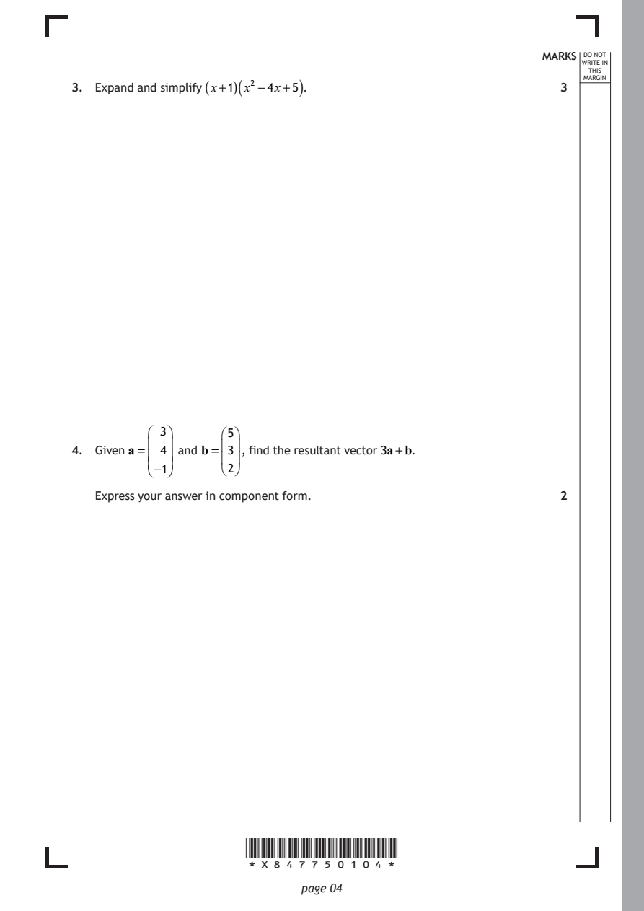
Selectable page text
MARKS _{W}^{D}_{R}^{O}_{I} _{T}^{N}OT
E IN
THIS
ARGIN
3. Expand and simplify
(x+1)(
x² −4x+5
)
. 3 ^{M}
3 5
4. Given a= 4 and b= 3 , find the resultant vector 3a+b.
−1 2
Express your answer in component form. 2
*X847750104*
page 04PDF page 5
Paper 1, Question 5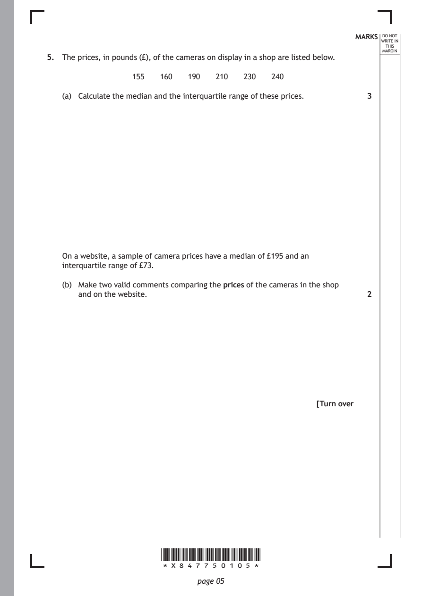
Selectable page text
MARKS _{W}^{D}_{R}^{O}_{I} _{T}^{N}OT
E IN
THIS
MARGIN
5. The prices, in pounds (£), of the cameras on display in a shop are listed below.
155 160 190 210 230 240
(a) Calculate the median and the interquartile range of these prices. 3
On a website, a sample of camera prices have a median of £195 and an
interquartile range of £73.
(b) Make two valid comments comparing the prices of the cameras in the shop
and on the website. 2
[Turn over
*X847750105*
page 05PDF page 6
Paper 1, Question 6Paper 1, Question 7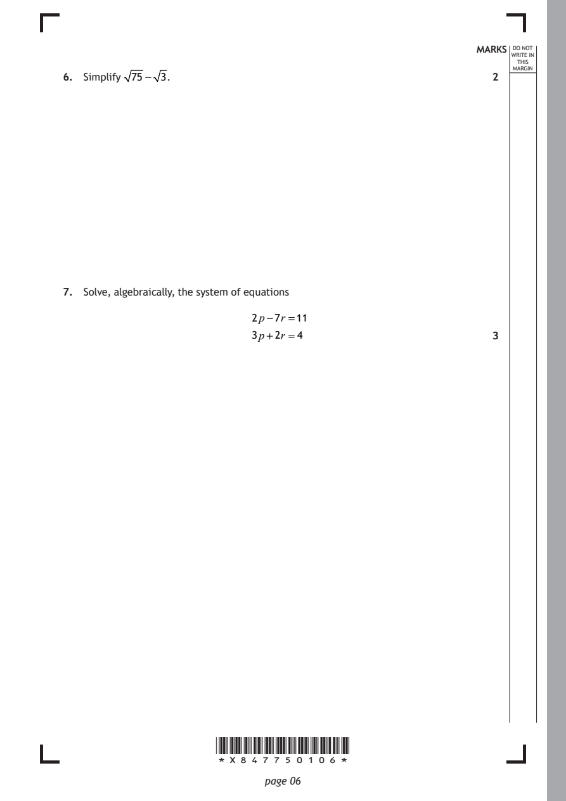
Selectable page text
MARKS _{W}^{D}_{R}^{O}_{I} _{T}^{N}OT
E IN
THIS
ARGIN
6. Simplify 75− 3. 2 ^{M}
7. Solve, algebraically, the system of equations
2p−7r =11
3p+2r =4 3
*X847750106*
page 06PDF page 7
Paper 1, Question 8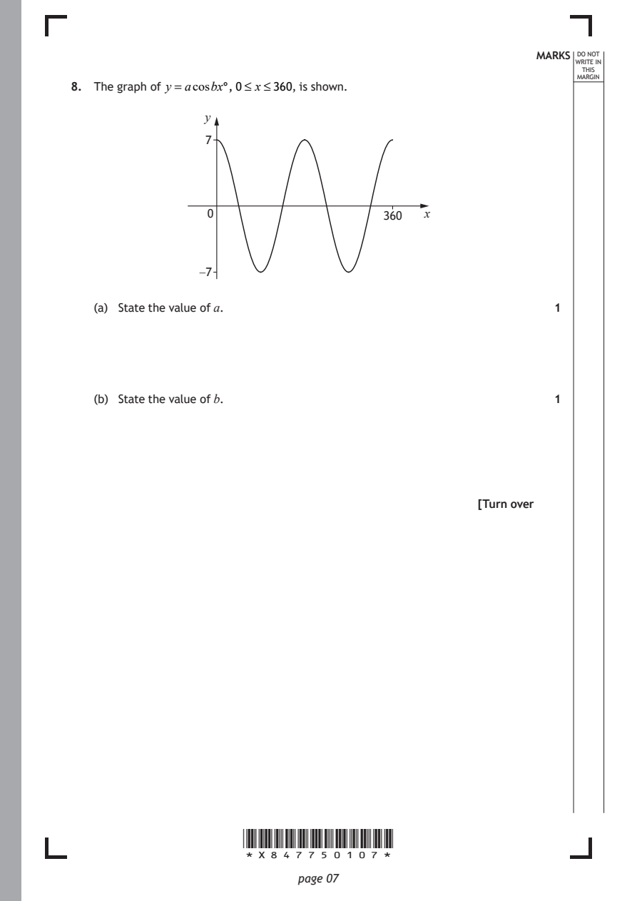
Selectable page text
MARKS _{W}^{D}_{R}^{O}_{I} _{T}^{N}OT
E IN
THIS
MARGIN
8. The graph of y =acosbx°,0≤ x≤360, is shown.
y
7
0 360 x
−7
(a) State the value of a. 1
(b) State the value of b. 1
[Turn over
*X847750107*
page 07PDF page 8
Paper 1, Question 9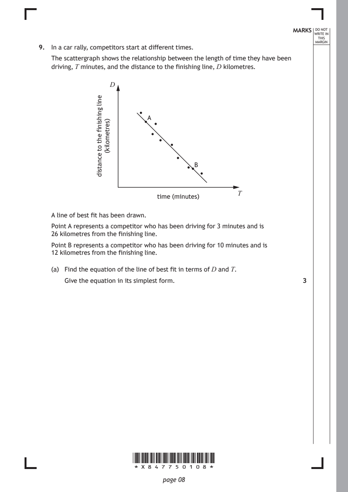
Selectable page text
MARKS _{W}^{D}_{R}^{O}_{I} _{T}^{N}OT
E IN
THIS
MARGIN
9. In a car rally, competitors start at different times.
The scattergraph shows the relationship between the length of time they have been
driving, T minutes, and the distance to the finishing line, D kilometres.
time (minutes)
*X847750108*
page 08
enil
gnihsinif
eht
ot
ecnatsid
)sertemolik(
D
A
B
T
A line of best fit has been drawn.
Point A represents a competitor who has been driving for 3 minutes and is
26 kilometres from the finishing line.
Point B represents a competitor who has been driving for 10 minutes and is
12 kilometres from the finishing line.
(a) Find the equation of the line of best fit in terms of D and T.
Give the equation in its simplest form. 3PDF page 9
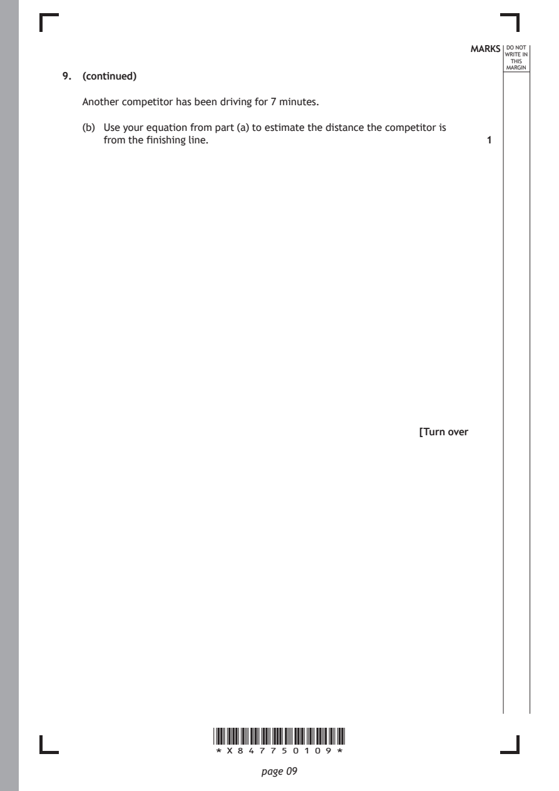
Selectable page text
MARKS _{W}^{D}_{R}^{O}_{I} _{T}^{N}OT
E IN
THIS
MARGIN
9. (continued)
Another competitor has been driving for 7 minutes.
(b) Use your equation from part (a) to estimate the distance the competitor is
from the finishing line. 1
[Turn over
*X847750109*
page 09PDF page 10
Paper 1, Question 10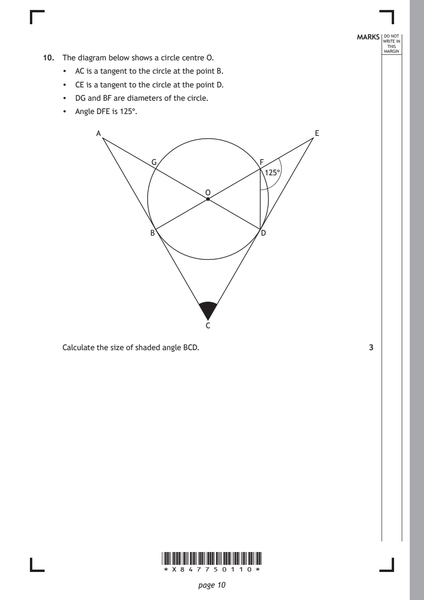
Selectable page text
MARKS _{W}^{D}_{R}^{O}_{I} _{T}^{N}OT
E IN
THIS
MARGIN
10. The diagram below shows a circle centre O.
• AC is a tangent to the circle at the point B.
• CE is a tangent to the circle at the point D.
• DG and BF are diameters of the circle.
• Angle DFE is 125°.
A E
G F
125°
O
B D
C
Calculate the size of shaded angle BCD. 3
*X847750110*
page 10PDF page 11
Paper 1, Question 11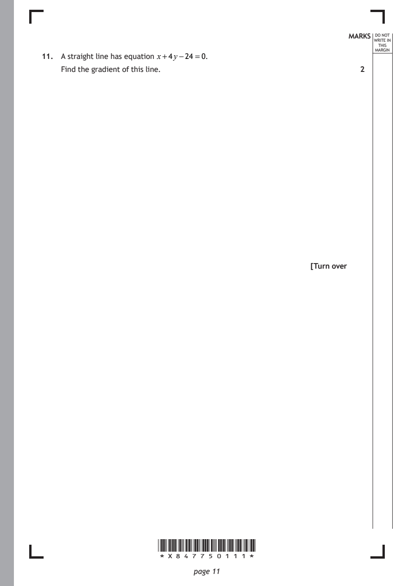
Selectable page text
MARKS _{W}^{D}_{R}^{O}_{I} _{T}^{N}OT
E IN
THIS
MARGIN
11. A straight line has equation x+4y−24 =0.
Find the gradient of this line. 2
[Turn over
*X847750111*
page 11PDF page 12
Paper 1, Question 12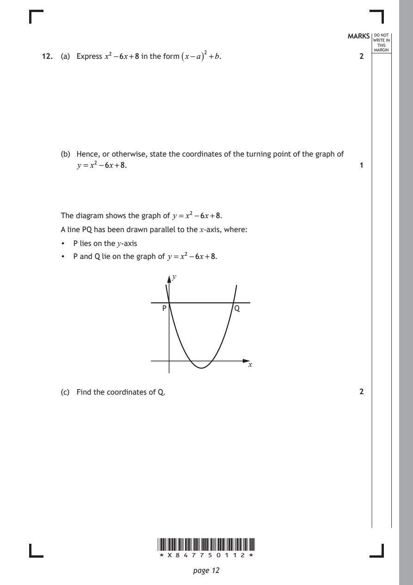
Selectable page text
MARKS _{W}^{D}_{R}^{O}_{I} _{T}^{N}OT
E IN
THIS
ARGIN
12. (a) Express x² −6x+8 in the form (x−a)² +b. 2 ^{M}
(b) Hence, or otherwise, state the coordinates of the turning point of the graph of
y = x² −6x+8. 1
The diagram shows the graph of y = x² −6x+8.
A line PQ has been drawn parallel to the x‑axis, where:
• P lies on the y‑axis
• P and Q lie on the graph of y = x² −6x+8.
y
P Q
x
(c) Find the coordinates of Q. 2
*X847750112*
page 12PDF page 13
Paper 1, Question 13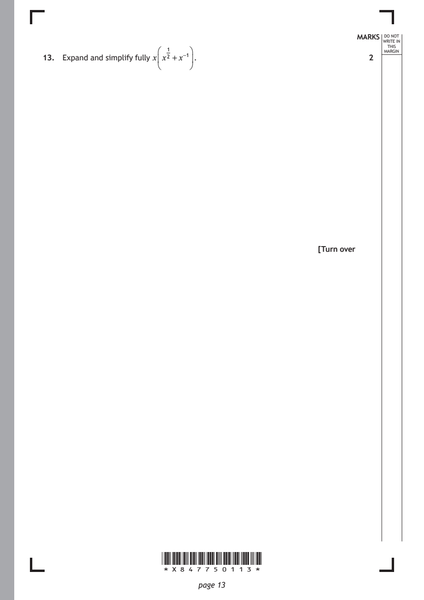
Selectable page text
MARKS _{W}^{D}_{R}^{O}_{I} _{T}^{N}OT
E IN
THIS
ARGIN
13. Expand and simplify fully xx²¹ +x⁻¹. 2 ^{M}
[Turn over
*X847750113*
page 13PDF page 14
Paper 1, Question 14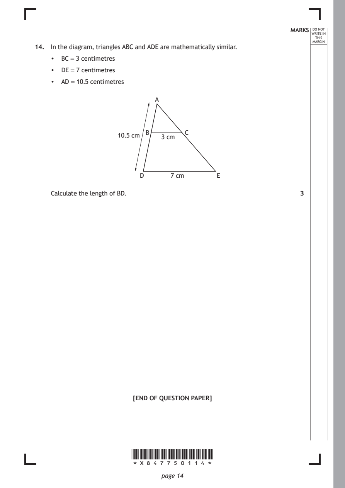
Selectable page text
MARKS _{W}^{D}_{R}^{O}_{I} _{T}^{N}OT
E IN
THIS
MARGIN
14. In the diagram, triangles ABC and ADE are mathematically similar.
• BC = 3 centimetres
• DE = 7 centimetres
• AD = 10.5 centimetres
A
B C
10.5 cm 3 cm
D 7 cm E
Calculate the length of BD. 3
[END OF QUESTION PAPER]
*X847750114*
page 14PDF page 15

Selectable page text
MARKS _{W}^{D}_{R}^{O}_{I} _{T}^{N}OT
E IN
THIS
MARGIN
ADDITIONAL SPACE FOR ANSWERS
*X847750115*
page 15PDF page 16

Selectable page text
MARKS _{W}^{D}_{R}^{O}_{I} _{T}^{N}OT
E IN
THIS
MARGIN
ADDITIONAL SPACE FOR ANSWERS
*X847750116*
page 16